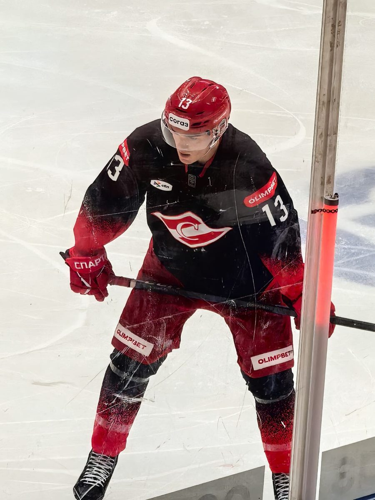

Тянь Бинъи назначен главным тренером сборной Китая по бадминтону на цикл Лос-Анджелес-2028
63-летний экс-чемпион мира встал у руля национальной команды, а двукратный олимпийский чемпион Чжан Нань вошел в тренерский штаб.

От лондонской драмы к золоту Рио: история Хоанг Суан Виня
Преодолев потерю матери, тяжелую близорукость и роковые неудачи на рубеже, офицер вьетнамской армии принес своей стране первое в истории олимпийское золото.

Камила Валиева не выступит на чемпионате России в Челябинске из-за ограничений по здоровью
20-летняя фигуристка не вошла в предварительный состав участников: врачи ограничили ее тренировочные нагрузки.

Боян Ходак возглавил сборную Малайзии в рамках реорганизации штаба
55-летний хорватский специалист возвращается в малайзийский футбол, а Тан Ченг Хоэ переходит на должность директора сборной.

От корта на кондитерской фабрике до величия в бадминтоне: путь Ратчанок Интанон
Чемпионка мира 2013 года преодолела бедность, хронические травмы и смерть матери, оставшись главным символом бадминтона Юго-Восточной Азии.
Главное

Сборная Китая U-17 набрала первое за 21 год очко на ЧМ, сыграв вничью с Марокко — 2:2
Форвард Чжао Сунъюань оформил дубль в Дохе, но гол на 99-й минуте лишил команду Сатоси Укисимы победы.

Казахстан назвал состав из 11 боксеров на финал Кубка мира в Ташкенте
Карина Ибрагимова возглавит команду из шести мужчин и пяти женщин на престижном турнире в Узбекистане.

Федерация бокса России принята в полноправные члены World Boxing на конгрессе в Панаме
Делегаты четвертого ежегодного конгресса World Boxing большинством голосов предоставили России право голоса в преддверии Олимпиады-2028 в Лос-Анджелесе.

Мирра Андреева заработала $10,65 млн за 2026 год и вошла в топ-5 теннисистов планеты по призовым
19-летняя чемпионка «Ролан Гаррос» уступила по доходам на корте только первой ракетке мира Елене Рыбакиной из Казахстана, сообщает Sportico.

Чемпион по кун кхмер Ваннтхонг разгромил Рики на турнире K-1 Revenge II в Токио
Камбоджиец забрал все раунды на судейских записках в «Коракуэн Холле», продолжив громкую экспансию бойцов кун кхмер во втором полулегком весе K-1

«Победы любят тишину»: Трефилов осадил Шишкарёва за обещание медалей Олимпиады-2028
Триумфатор Рио-2016 призвал не горячиться с прогнозами, пока чиновники лишь пытаются выбить wild card в Лос-Анджелес.
ФутболЕщё →

ТеннисЕщё →


ЕдиноборстваЕщё →
АвтоспортЕщё →

Олимпийские видыЕщё →
Тянь Бинъи назначен главным тренером сборной Китая по бадминтону на цикл Лос-Анджелес-2028
Камила Валиева не выступит на чемпионате России в Челябинске из-за ограничений по здоровью
«Победы любят тишину»: Трефилов осадил Шишкарёва за обещание медалей Олимпиады-2028
ХоккейЕщё →

«Спартак» и «Металлург» обменялись четырьмя нападающими: Мальцев и Морозов уходят в Магнитогорск

Две передачи Мичкова помогли «Филадельфии» обыграть «Баффало» 4:3, его результативная серия достигла пяти матчей

Безголевая серия Овечкина достигла 12 матчей — «Нью-Джерси» обыграл «Вашингтон» 5:2
Истории
От лондонской драмы к золоту Рио: история Хоанг Суан Виня
Преодолев потерю матери, тяжелую близорукость и роковые неудачи на рубеже, офицер вьетнамской армии принес своей стране первое в истории олимпийское золото.

Этот день в 2013-м: Магнус Карлсен сверг Вишванатана Ананда в Ченнаи
22-летний норвежский гроссмейстер оформил победу со счетом 6½:3½ в 10-й партии и впервые завоевал титул абсолютного чемпиона мира по шахматам.